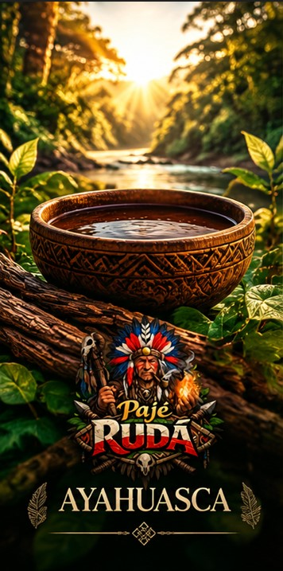

Biblioteca educativa
Ayahuasca
Uma tradição amazônica, muitos contextos.
História e origem
Bebida psicoativa de origem amazônica, associada a diferentes povos e territórios. Seus usos têm trajetórias próprias; não existe uma única tradição indígena que represente todas as demais. No Brasil, também integra caminhos religiosos que se organizaram no século XX.
Tradições e significado cultural
Em determinadas comunidades, participa de rituais de aprendizagem, espiritualidade e vínculos coletivos. Os sentidos atribuídos à experiência dependem da cultura, da comunidade e da história de cada pessoa. A expressão “medicina” tem aqui sentido tradicional, sem promessa de tratamento.
Conhecimento e segurança
Pode produzir alterações intensas de percepção e emoções. Há relatos de náusea, vômito e sofrimento psicológico. Pesquisas clínicas não permitem garantir benefício individual nem transformar uma cerimônia em tratamento médico.
Cuidados e contraindicações
Há risco de interações graves com medicamentos e outras substâncias. Histórico de psicose ou mania, condições cardiovasculares, gestação e amamentação exigem atenção clínica; esta página não determina aptidão. Não interrompa medicações para participar. Procure avaliação profissional e informações sobre triagem, acompanhamento e resposta a emergências.